时光荏苒岁月如歌，北航头马已经走过了三度春秋，终于迎来我们的第100次meeting。100th.meeting的筹备很早就展开啦，各位小伙伴也是开动智库，为meeting从内容到形式出谋划策。严肃（doubi）的准备工作留下了珍贵的工作照和印象深刻（meiyouxiaxian）的段子。。。总之，在一群member的辛勤努力下，100th meeting 新鲜出炉了！！！不同于以往，100th史诗级纪念meeting无table topic，无prepared speech，更重要的是无taboos！！这样别出心裁的“三无”meeting，让大伙儿吃了一惊（re lie huan ying），取而代之的是生动有趣的回顾历史、游戏环节和毕业仪式。回顾历史让我们重温了每届president引领时代的光辉成就及无数黑点；游戏环节刺激有趣，给我们堪比综艺节目的现场体验；毕业仪式笑点与泪点并存。下面，let's get to some details，细细回味一下难忘100th 吧。 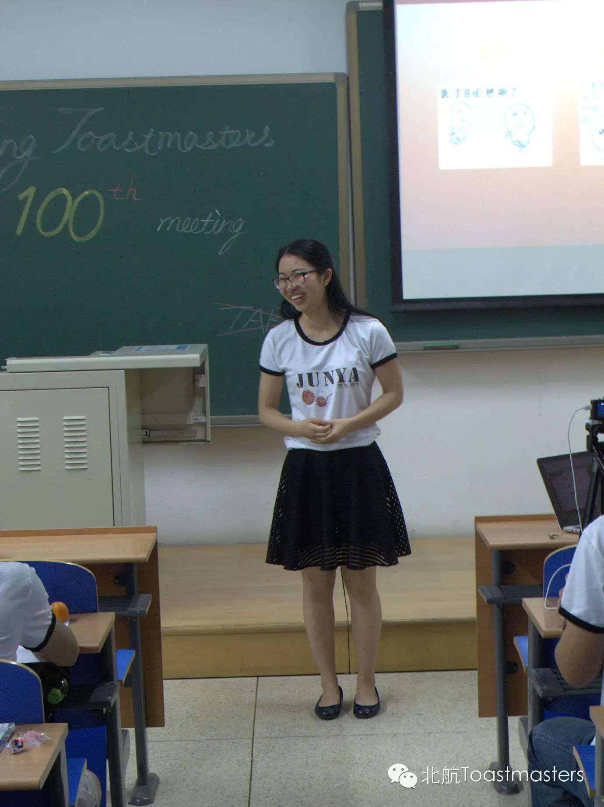
温婉可人的主持人俊雅照例用英文做了开场，随后我们得以进入期待已久也是史上首次的全中文环节！德隆公公粉墨登场，开始了他的精心准备的历史回顾，展示思路既涵盖了俱乐部的发展史和创业史，让我们当思来之不易，又神来之笔般融入了无数黑点，实在令人叹为观止。从教父Wesley时代的白手起家，到Peter时代的苦心经营，再到Doris时代的“阴盛阳衰”，及至现任Sophie的欣欣向荣，几代主席大人各具风格的不懈努力是俱乐部得以传承和发展的基础，在“头马 member 最大”的理念中，有了“最底层”的主席的开创和引带，才有了不断活跃的俱乐部氛围和始终传承的人文关怀。随后，德龙公公就开始的用他幽默的画风带我们回顾了下俱乐部每个人加入之后的变化和趣事，在他精心设计的四格漫画中，member们个个遍历，每人都抽象出最鲜活的个性，最典型的特质跃然眼前，德龙的创意、机智和幽默让我们拍手叫绝。
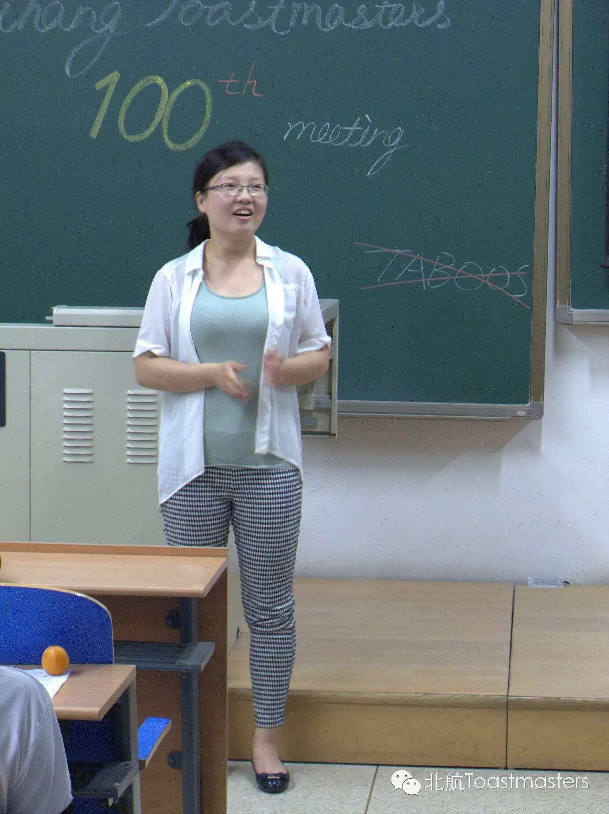
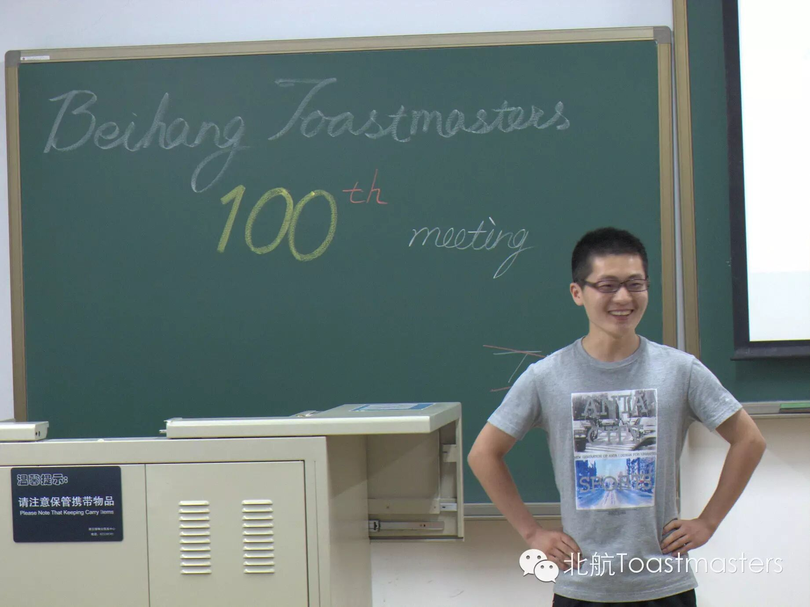
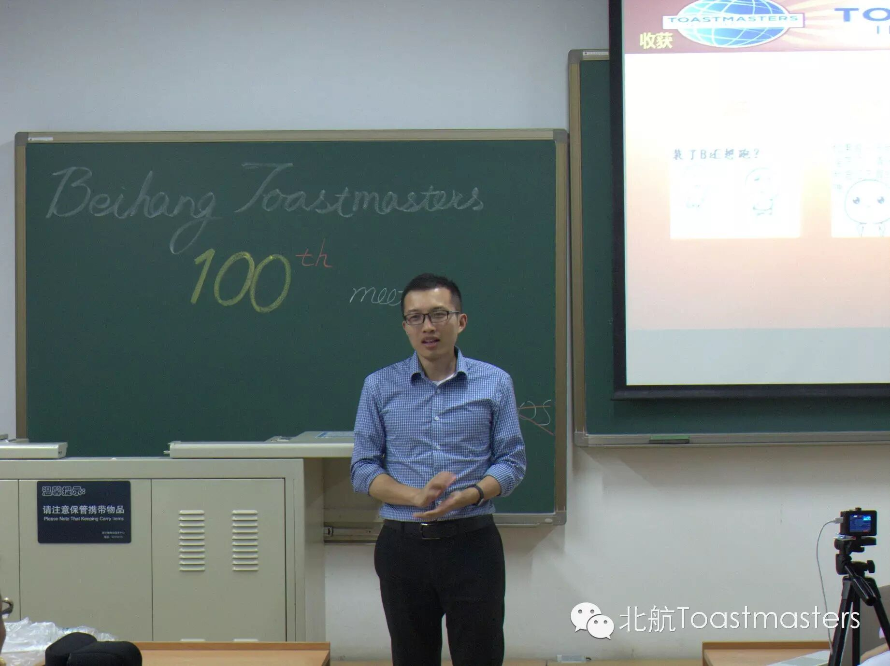
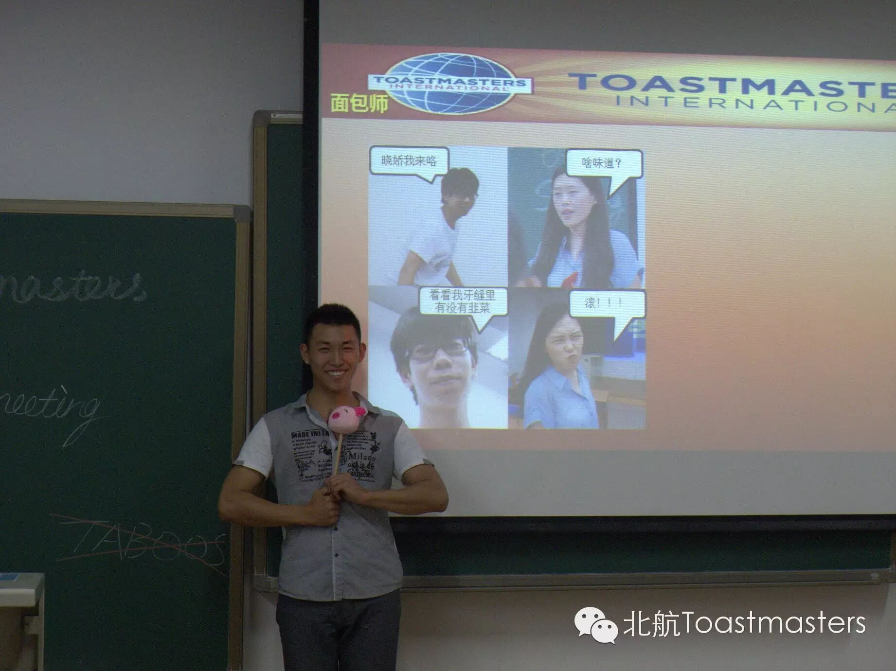
在大家的欢声笑语中，德隆公公结束了他包罗万象（hei dian wu shu）的历史回顾，接下来，就是凯文大帝的脱口秀了。作为资深段子手，两三句话就能让台下观众乐得前仰后合，段子衔接自然流畅，前后呼应成趣，人物形象丰满别致，真是妙不可言，可圈可点啊。段子的来历也有章可循，从俱乐部member的性格特征到奇闻轶事，集诸子之大成，汇岁月之精华，聚人生之奇事，每个段子都勾起我们一段美丽（gao xiao）的回忆，每个性情真切（rong yi bei hei）的member都“在劫难逃”，可见凯文大帝的内功之深。 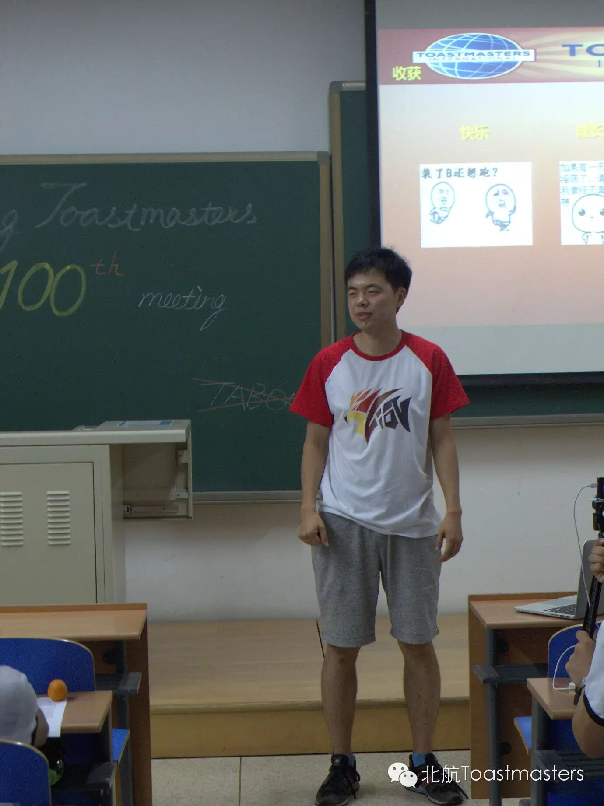
最活跃的环节就是博文同学的游戏咯，游戏的奖品也是令人垂涎：萌萌的大白，舒服的抱枕，可爱的娃娃和狗狗，不一而足。第一个环节是猜名字，参与者需要模仿指定的member来让队友猜测其模仿的是哪一位。心地善良（ju xin po ce）的博文君进行了精心设计：让参与者猜同队队友甚至猜其本人，由此制造出诸多欢乐。第二个游戏是边吹气球边思考答题，问题覆盖了一些简单的俱乐部知识和令人智商捉急的小学数学运算，小伙伴们玩得不亦乐乎。
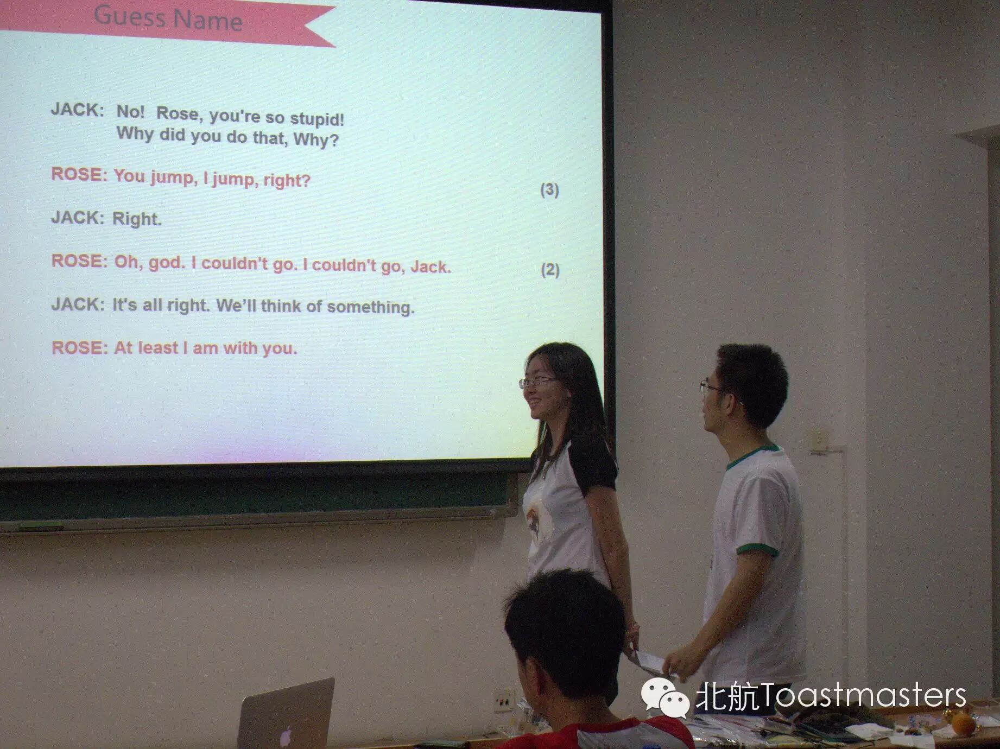
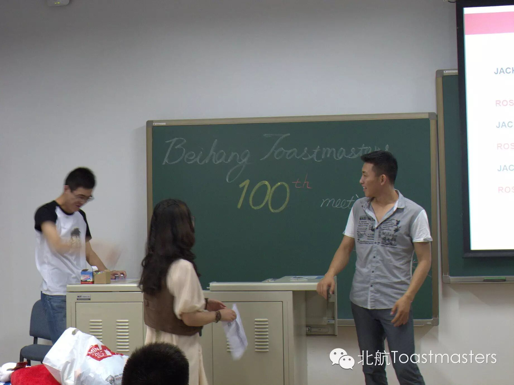
下半场的催泪彩蛋到了放送时间，要送头马的两位老member毕业生了：获此殊荣的是神僧Monk和翘臀Dale。两位历史人物都为我们俱乐部做出了不菲的贡献：Monk是俱乐部成立以来最走心的VPE，Dale是最出色完成 SAA使命，并且成功在俱乐部找到真爱的典范。两位其实并不是一个仪式可以送的走的，他们表示以后还要常来Meeting（此处传来monk声音：上半场来不了咱来下半场啊！！！）俱乐部随时欢迎你们！我们头马人永不毕业！！！
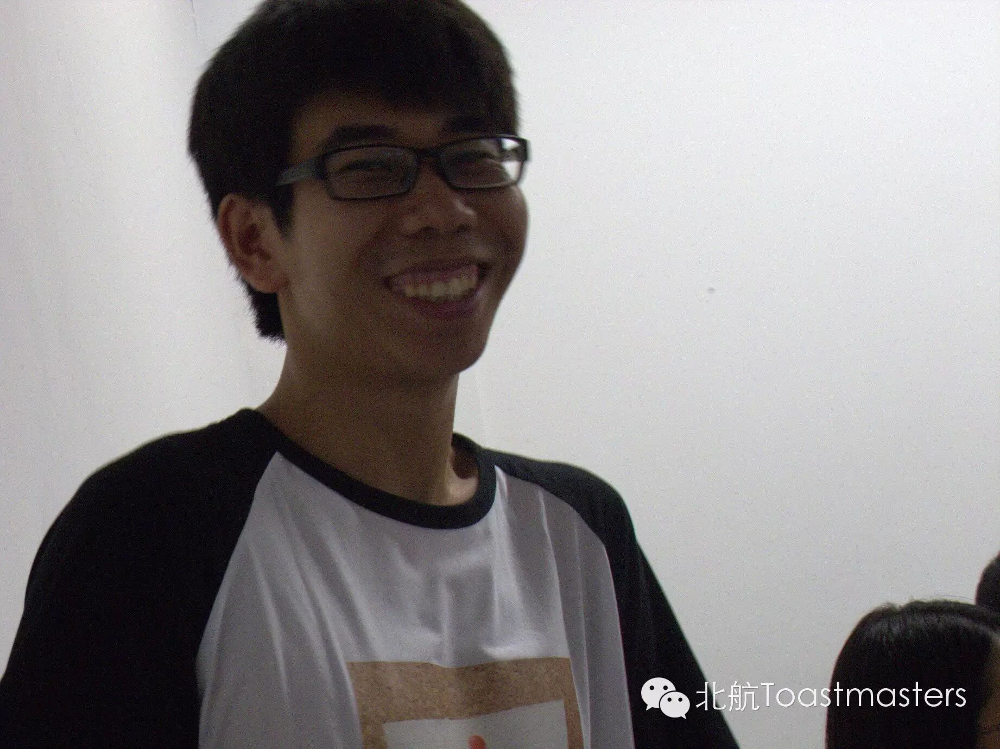
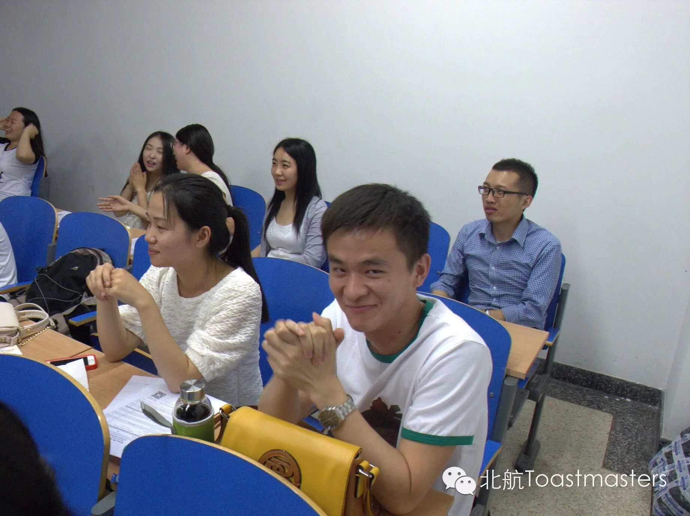
不知不觉，北航toastmaster已经走了这么远，100th meeting成为我们历史上的一个里程碑。头马带给我们的成长和提升历历在目，带给我们的欢乐和感动无法比拟，这里像是一个家了。插一句小编的话：不是北航人，却在北航头马找到了归属感，这里的温馨可爱，更与谁人说？
文之将尽，其情难尽，头马聚集了一群志同道合的人，承载了这群人对理想的追逐，对生活的热爱，对人的关怀，对未来和未知的无尽探索。我们会一直这样走下去，头马，你与我们同在！！！
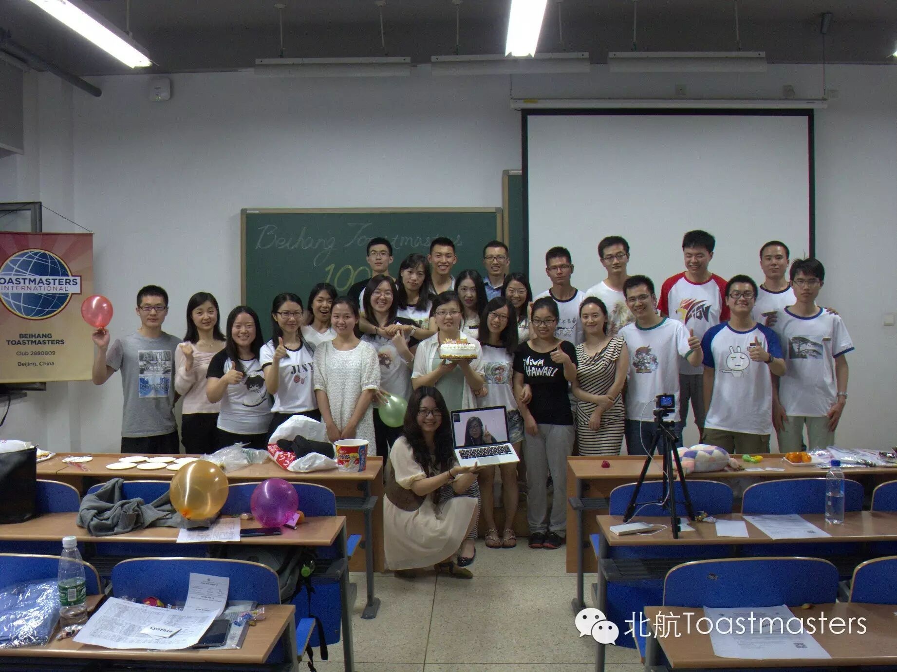
https://mp.weixin.qq.com/s/BIlcbFQKqCYFS-NwkkFkzw
本页为抢救式本地归档，图文已永久保存。